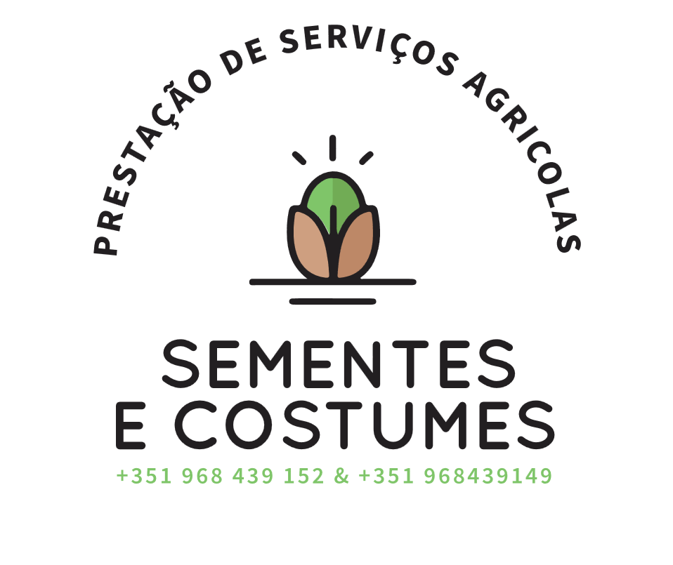
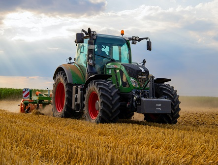

O Grupo Sementes é um conjunto de empresas que atua no setor da prestação de serviços agrícolas, integrando as entidades Sementes Costumes, Unipessoal Lda, Sementes Costumes II - Serviços Agrícolas, Lda, Sementes Costumes III - Serviços Agrícolas, Lda, Circuito d’Outono, Falésia Fértil, Genuína Primavera e Instantes d’Inverno.
Este grupo dedica-se à execução de diversas atividades no âmbito agrícola, assegurando serviços especializados e ajustados às necessidades específicas de cada cliente. Com uma atuação assente na eficiência, qualidade e rigor, o Grupo Sementes procura responder de forma eficaz às exigências do setor, contribuindo ativamente para o desenvolvimento e a sustentabilidade das explorações agrícolas.
Através de uma estrutura sólida e diversificada, o grupo abrange diferentes áreas de intervenção, garantindo flexibilidade, proximidade e elevada capacidade de resposta no apoio aos seus parceiros e clientes.